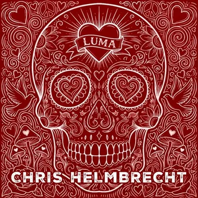
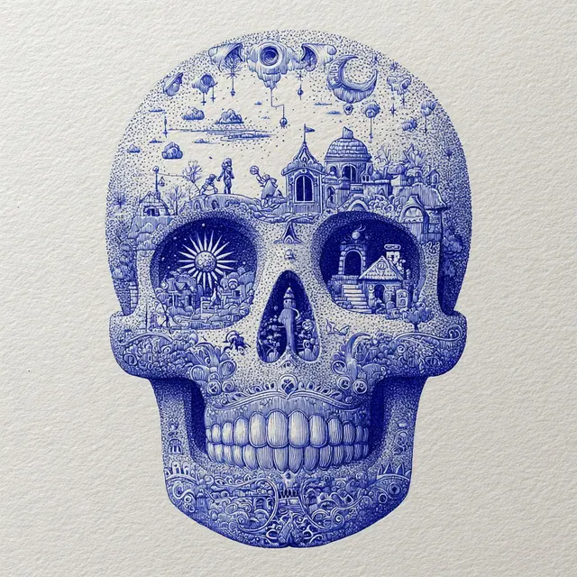
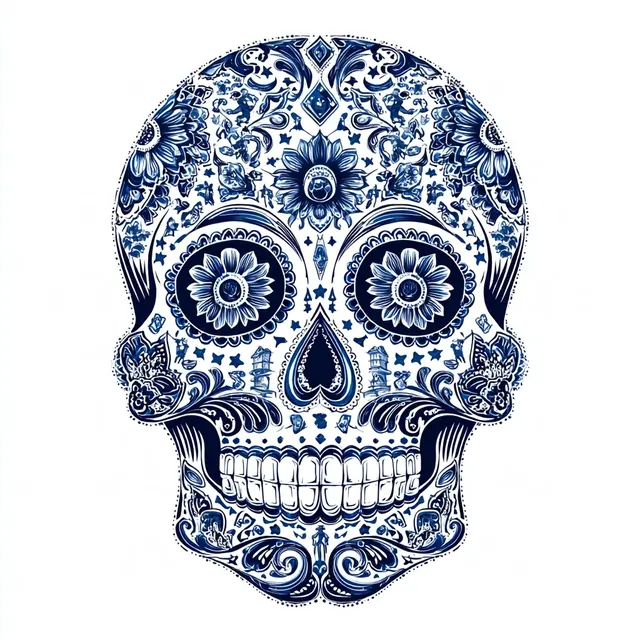
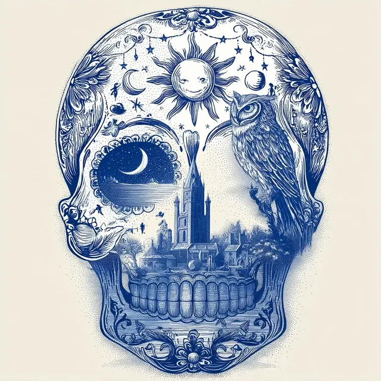
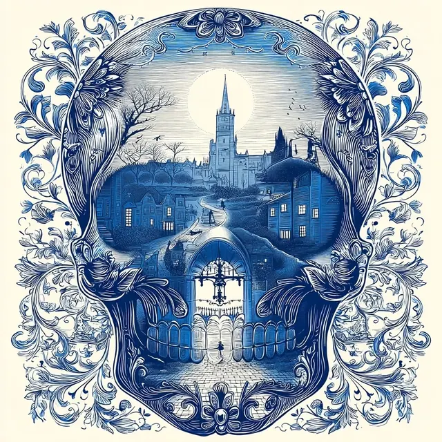
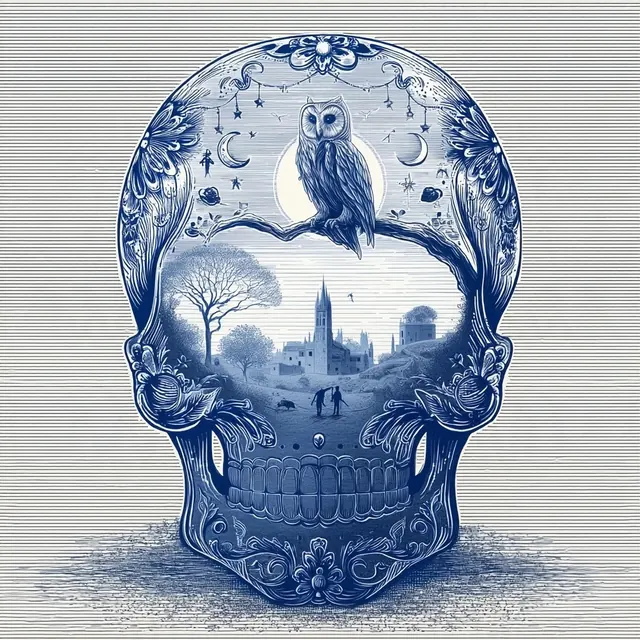
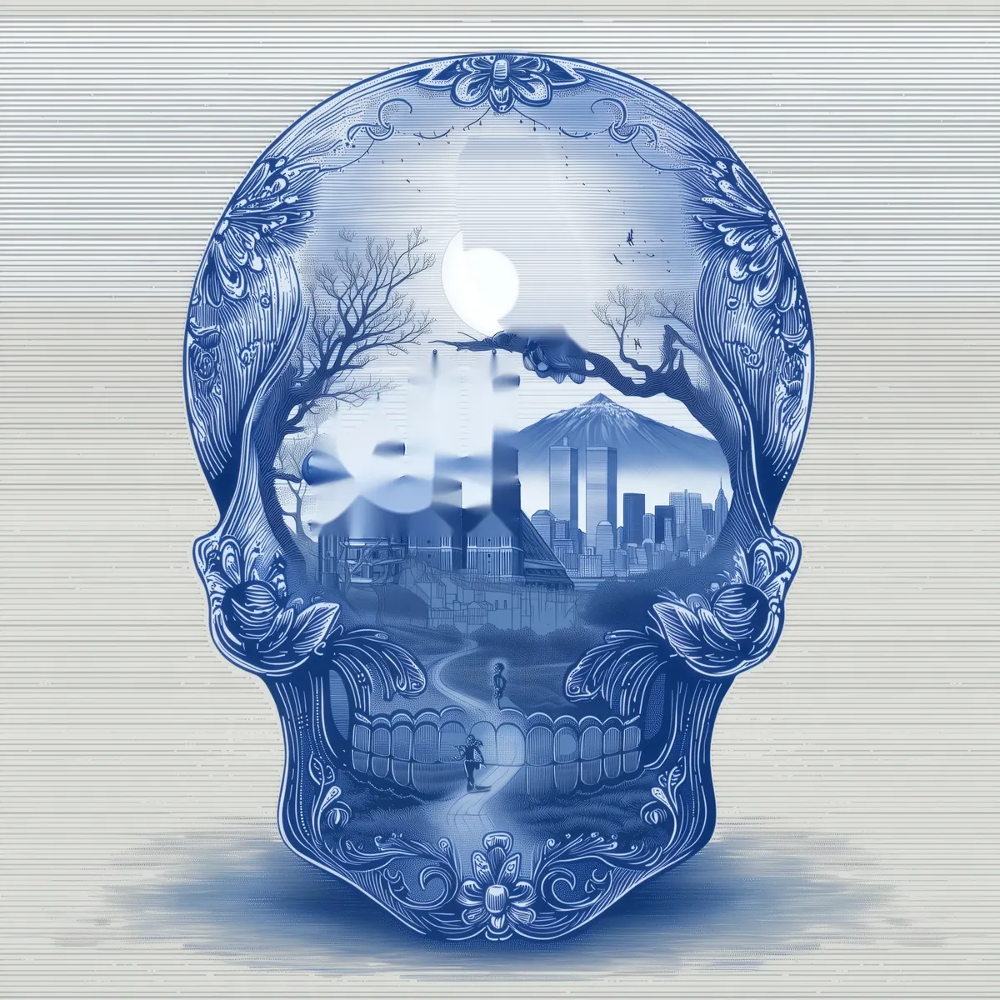
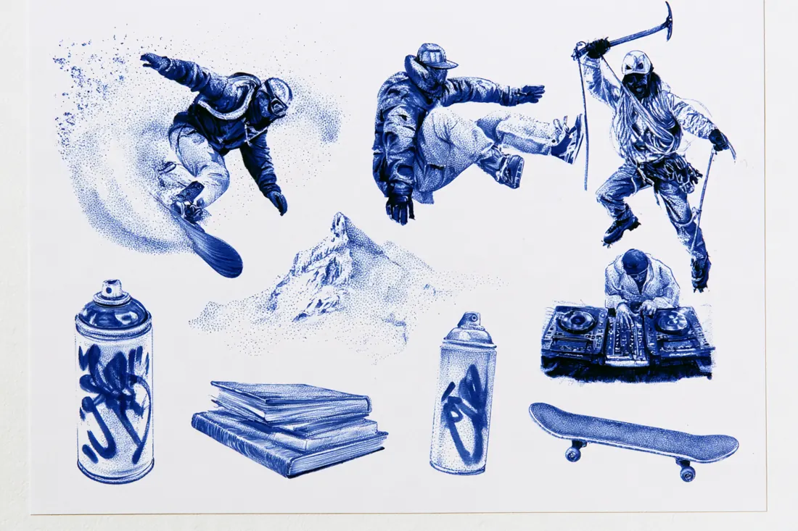

Making of
How this site was made.
This is my private site. It is also a showcase: of what is possible today when someone who knows websites, editorial work and the AI tools sits down with them and does not let go. There is no button for this. It takes a lot of decisions, and a lot gets thrown away.
Why a skull
I have always had a thing for skulls. Punk at first, later playful, like the sugar skulls from Mexico. Out of that I make my own style. Some of them are in the shop, on sweaters and T-shirts. They are also the covers of my mixes on SoundCloud. So a skull for my new personal site was the obvious thing.



From the first drafts to the drawing
The research and the first brief came from Perplexity. Midjourney drew. There were many drafts, in very different directions. The one that stayed is a skull you can look into: in it the cities of my life. Moscow, Munich, Tenerife, New York. An owl, the moon. Blue ink, like Delft porcelain.






Early drafts from Midjourney. On the far right the drawing as it stands on the start page.
The small figures were drawn the same way, on sheets like this one.

One of the sheets.
One of the first animations, straight from Midjourney. Five seconds.
On the site the skull is not one film. It is the still drawing, and laid into it are seven small films: the owl, the moon, the trees, the city, the water, the path. Each sits in its place to the pixel, and each can stop on its own.
Who did what
- Perplexity
- The research at the start, the brief for the first draft of the skull, and critical feedback on the result.
- Midjourney
- The skull, the small figures, in the bio the helicopter, the Teide and the tree in the moonlight, the drawings of the flying lesson, and the turntable on the DJ page.
- Runway
- The short films: owl, moon, trees, path, city and water on the start page, and in the bio the helicopter, the clouds at the Teide and the night sky.
- ElevenLabs
- The night sound with the owl, and the voice of the flight instructor.
- Topaz Gigapixel
- The 4K version of the drawing, so that it stays sharp when you fly into it.
- Claude
- Concept, code and assembly. Coded with Claude Fable 5.2, set to high.
- Me
- Direction, selection, the texts, the photographs, and testing on the phone until it was right.
In this order
- Research and a first brief for the skull.
- The drawing: many drafts, one skull, then the 4K version.
- The start page: doors in the drawing, the small films, the night sound.
- The first hidden game.
- The bio as a logbook with a chart, and two more games inside it.
- The DJ page with the drawn turntable.
- The blog: 32 essays, moved over from the old site.
- Everything in two languages.
- The press page, from my own archive.
The code
There is no website builder behind this and no ready-made framework. Every page is written by hand for this site: plain HTML, CSS and JavaScript, around 380,000 characters of it, plus the scripts that build the blog, the press page and the German pages from simple text documents.
Some of it is more than it looks. In the bio the helicopter, the clouds at the Teide and the night sky are films whose white background is removed live in your browser, so that they lie on the paper like ink. The 360° film runs through a small viewer of its own. The flying lesson has a little flight model, and its Alps are computed from real elevation data. The turntable talks to Mixcloud’s player directly, so the tonearm knows where the music is. And three games had to be written, drawn and tuned.
The other half of the work is restraint. Films run only while you can see them. On a slow connection or in data-saving mode the drawing stays still and nothing heavy is loaded. A phone should not get hot from a skull.
Not everything worked the first time. In the film of the path one of the two wanderers lost his ornaments after four seconds and walked on as a dark puppet. A script of its own now carries him through the film as he was drawn. A helicopter that is simply mirrored to turn round looks wrong, so it never turns: it leaves on one side and comes back on the other. Dots on the doors were tried and thrown out. Now one door after another fades in and out again.
Small things that are easy to miss
- The clocks on the Frauenkirche show the time in Munich. On the start page and in the bio.
- When the owl in the night sound calls, the owl in the drawing moves.
- Leave the skull alone and one door after another shows itself, with its name, and fades again.
- The skull leans towards the pointer. On a phone it follows the hand that holds it.
- A click on a door flies into it. Coming back, you fly out of the same door.
- Two wanderers set off down the path. A flock of swallows circles the dome, a flying girl among them.
- When the pointer reaches the Teide, a snowboarder drops in.
- In the bio a swallow draws my route across the chart while you scroll.
- On the DJ page the tonearm stands where the recording is. Lift it, put it down elsewhere, and the music jumps there.
- Left alone for three minutes, everything goes still. The next movement wakes it.
What is hidden
Nothing on the site points at these. Here they are anyway.
Owl Night Long
On the skull’s left cheekbone. An arcade game the way the early eighties would have built it. The moon is gone. An owl looks for it in Munich, New York, Tenerife and Moscow, and in the end in the skull itself. The five best nights are kept with three initials, as in a real arcade, and only in your browser.
Play
“Was soll das werden?”
In the bio. Click the helicopter, then catch it in flight, or take the invitation that appears beside it. You sit in an Alouette II and try to hold it still over a meadow while the flight instructor shouts. I learned to fly on the Alouette II with the Federal Police helicopter squad. This is my first flying lesson. Now yours. Three levels: easy, medium, realistic.
To the helicopter
DONT WALK
Under New York in the bio. An avenue in Manhattan, some year between 1997 and 2002, my years there. The light says DONT WALK and never changes. Six lanes, a lot of yellow cabs, and everything you want is on the other side.
Play
Tenerife, all around
Click the engraving of the Teide in the bio. It opens a 360° film of the sea off Tenerife, shot by me. Drag to look around.
To the bio
The turn in the powder
Move the pointer over the snowboarder in the bio, or tap him. Powder flies off his back foot towards the headline, as thousands of very small blue dots.
To the bio
The branch
Shake the branch the owl sits on three times and she takes off. She comes back. On an iPhone the same branch switches on the tilting.
To the skull
Mushrooms
Click anywhere on the skull itself and mushrooms grow there. After ten of them the whole skull trips for a while.
To the skull
This page
It sits on the right cheekbone, opposite the game.
Found, read, usable
- Built to be found, by search engines and by AI assistants. Every page carries its description and structured data, there is a sitemap, and a file called llms.txt tells assistants what is where. The texts are in the pages themselves, not painted there by script.
- Accessible. Every door and every hidden thing is a real link or a real button, reachable with the keyboard and named for screen readers. Whoever has switched off motion gets a site that holds still. Without script every page can still be read.
- Easy to get around. The skull is the navigation, and for everyone who would rather not search there is a plain menu on every page. German and English, each page with its twin.
- No cookies, no tracking, no scripts from other companies. Mixcloud is only contacted when you press Play.
Credits & Sound
Photos: Danny Strasser, Daniel Grund, Flo Hagena, Chris Helmbrecht
Helicopter sound effects on the bio page and in the flight game: freeSFX — www.freesfx.co.uk
The Alps in the flight game are computed from open elevation data (Mapzen Terrain Tiles): SRTM terrain data courtesy of the U.S. Geological Survey; Europe terrain data produced using Copernicus data and information funded by the European Union – EU-DEM layers; Austria terrain data © offene Daten Österreichs – Digitales Geländemodell (DGM) Österreich.
One for you?
If you want a site like this, or something of the kind built into yours, get in touch. And have a look at what else I do.